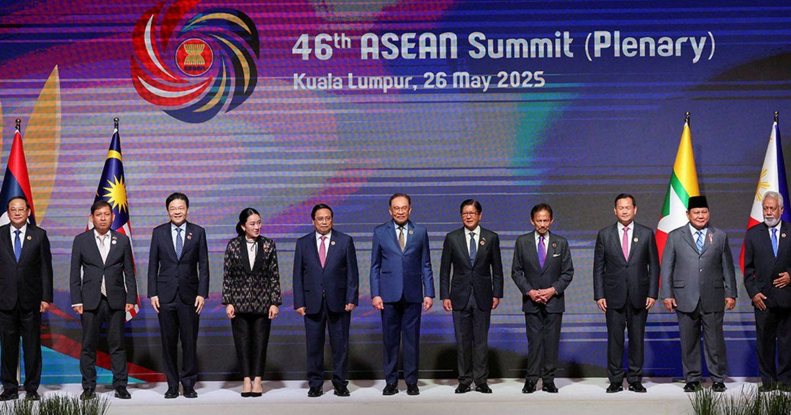
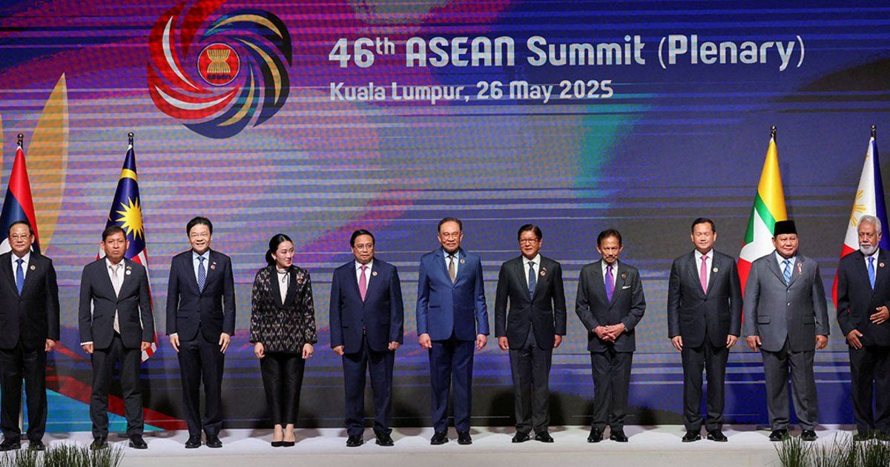

Mendukung SDGs dengan
Kerja Sama Regional
 

Secara regional, Indonesia terlibat dalam ASEAN ENMAPS (Effectively Managing Networks of Marine Protected Areas) yang diluncurkan oleh ASEAN dan UNDP pada Juni 2024 dengan pendanaan GEF, berlangsung hingga 2029. Proyek ini memiliki 2 situs pilot di Indonesia (ditambah Filipina dan Thailand), fokus pada pengelolaan jaringan MPA (Marine Protected Areas), perencanaan spasial laut, dan pengelolaan ekosistem berbasis sumber daya. Hasil awal termasuk penguatan konektivitas ekosistem laut ASEAN, peningkatan ketahanan terhadap ancaman pesisir, serta kolaborasi dengan kelompok kerja ASEAN untuk pengawasan perikanan dan restorasi.
Indonesia juga aktif dalam ASEAN Framework of Action on SDG 14 sejak adopsi SDGs 2015, yang menghasilkan pengurangan overfishing ilegal dan peningkatan perlindungan 10% kawasan laut konservasi sesuai target 14.5, melalui forum maritim Asia Tenggara yang membahas perubahan iklim dan polusi laut.